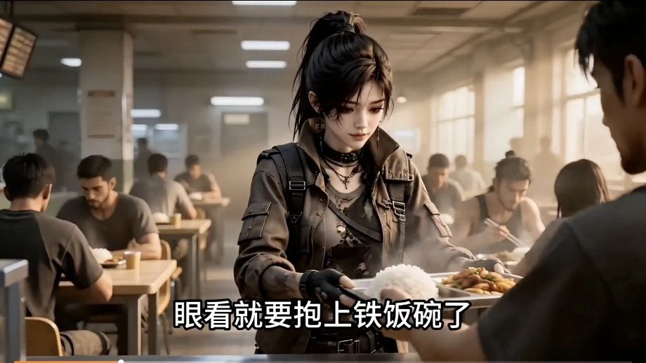
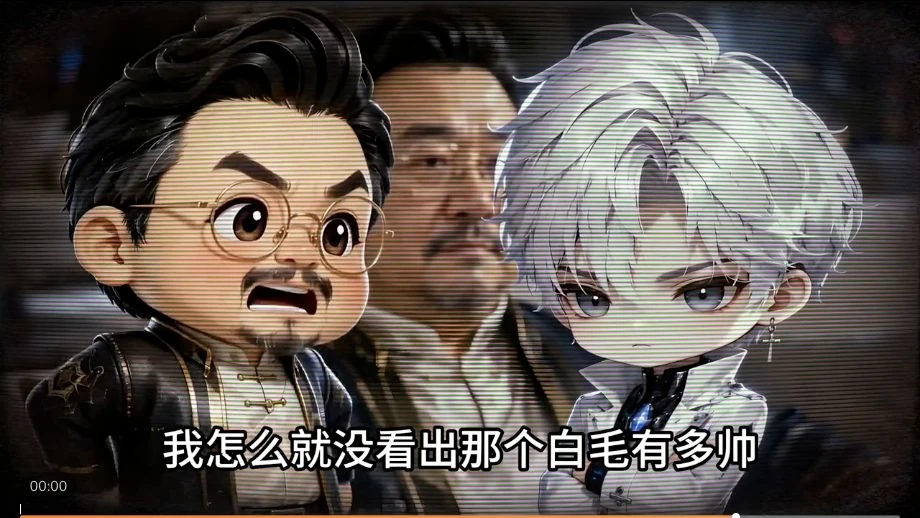
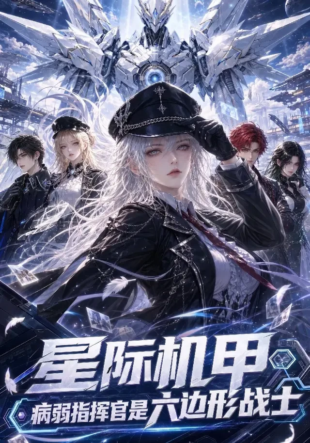
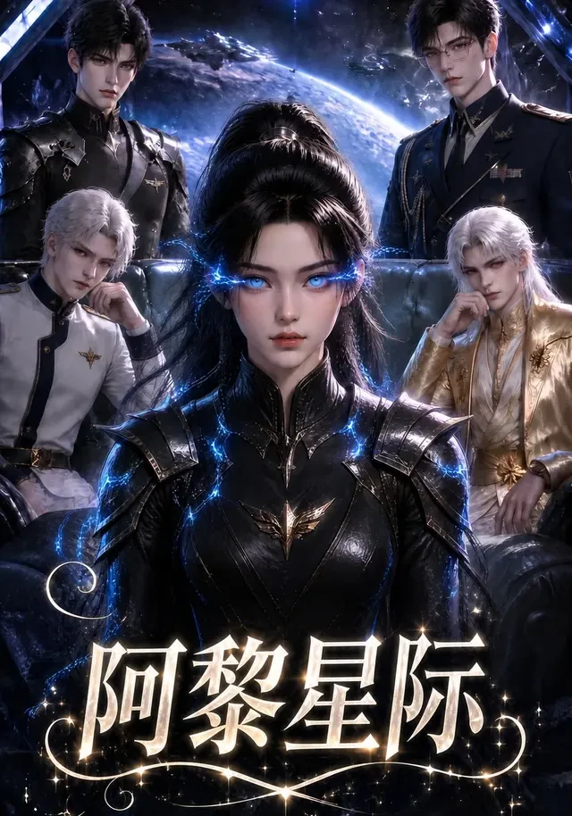
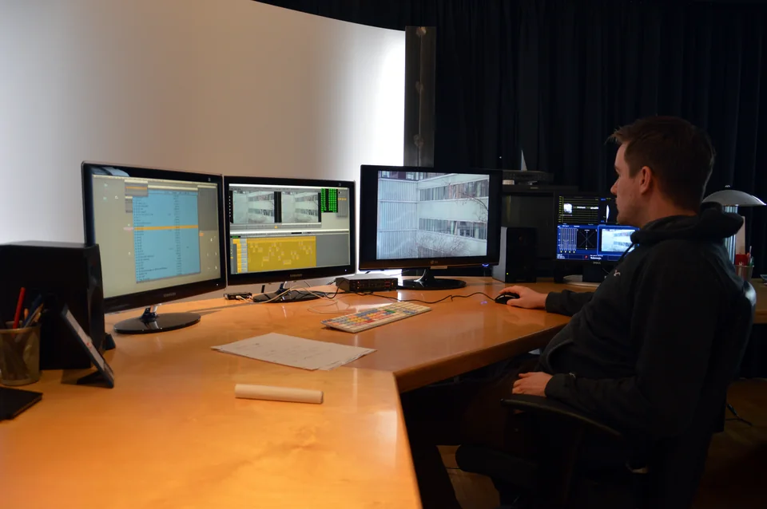

首集剧照 00:28–00:29
一份工作的分量
餐盘和饭菜把星际故事拉回日常。“眼看就要抱上铁饭碗了”让稳定劳动成为王天微眼下想争取的生活保障。
互动剪辑台
更换景别、选择维修结果，再调整镜头停留的时间。你的选择会立刻出现在监看画面和时间线里。
先选一个景别，比较观众能看到的信息。
参考原作视觉设计生成的练习画面。剪辑环节依据承制团队研究设计。
首集细读
点击剧照上的标记，看看首集怎样通过餐桌、对白和画风交代王天微的职业选择。

首集剧照 00:28–00:29
餐盘和饭菜把星际故事拉回日常。“眼看就要抱上铁饭碗了”让稳定劳动成为王天微眼下想争取的生活保障。

首集剧照 02:14–02:15
父亲用夸张的 Q 版表情调侃白发男神。画风和对白一起削弱了追爱的分量，也让王天微重新规划专业方向更容易理解。
追剧的悬念由此落在她怎样用上手艺，以及什么时候得到认可。这是对开局与简介的解读。
在红果观看首集海报与首季简介
三部作品都从受限的身份开场，让女主角凭已有或新获得的能力重建自己的位置。海报把这种共同的成长关系指向三种不同的成功。
职业适配 · B 级
少女与重型机甲形成尺度反差。维修和设计让她找到能够发挥手艺的位置。

实力获认可 · 隐藏 SS 级
军帽、制服与白色机甲突出指挥权。格斗和战术让被低估的实力逐步显现。

能力跃迁 · 超 3S 成长
蓝色眼部光效突出超常能力。中医与进化剂为改变身份处境提供行动资源。
| 维度 | 精神小妹 | 病弱指挥官 | 阿黎星际 |
|---|---|---|---|
| 身份起点 | 魂穿追爱少女 | 魂穿病弱孤女 | 贫民窟里被低估的少女 |
| 行动资源 | 维修与机甲设计 | 格斗、战术与指挥 | 中医与进化剂 |
| 学院路径 | 转向机甲师专业 | 进入莫邪星院 | 前往第五校 |
| 回报承诺 | 靠手艺建立生活 | 成为全能指挥官 | 摆脱受限处境 |
标准化与假性个人化 相似的成长结构让回报容易预期，职业和造型差异使作品可辨认。王天微的 B 级设定也带出独特的成功尺度：让能力与工作相配。
人机协作
崔家勇与孟雨欣走访郑州和广州的四家承制公司，开展五次焦点小组访谈，并归纳出四道工序。研究原文
团队围绕题材、人物和情节走向形成剧本。人物为什么行动、冲突何时出现，要在生成镜头之前说清楚。
团队借助 AI 拆出分镜，把人物动作、场景和视角写成生成指令，再逐镜复核，避免逻辑问题进入下一环节。
同一指令可以生成多个候选片段。制作人员要对照角色形象、动作方向和情绪连续性，决定哪些可以剪在一起。
剪辑人员把入选片段、配音、字幕和音效放进同一条时间线，按故事需要调整镜头顺序和停留时间。

平台与分发
Chengyao Liu 记录的委制微短剧案例，展示了平台对立项和经费的控制如何影响人物关系。研究原文
故事围绕女性之间的互助。
内容经理提出增加男性角色及恋爱情节。
调整后，项目获得批准及制作经费。
该微短剧的委制案例用于解释行业条件。《精神小妹也要修机甲吗》的平台合同及收入构成未公开。
Liu 研究中的短视频平台委制剧通常可免费观看，广告收入让播放和持续观看具有商业价值。
部分小程序剧在关键情节设置付费节点。悬念把后续剧情安排在解锁之后，付费表现直接关联收入。
互动演算
拖动滑块，看看从观看到解锁的人数怎样变化。数字是演示用的假设值。
延伸研究
赵倪聪与陈雨菲把生产门槛降低与分发端的模板化放在一起考察。模型和工作流让更多人可以做剧，分发端的算法与奖励机制仍偏向容易识别、快速反馈的内容。论文摘要
研究结论
职业愿望进入漫剧后，熟悉的成长结构让它有了可期待的回报。文化工业理论把这类想象中的兑现理解为替代性满足（Strinati，2009）。
王天微能凭维修经验重选专业，学院制度、职业风险和能力等级也影响她的选择空间。
生成、筛选和剪辑扩大了创作选项，立项、经费和分发又影响哪些表达能被拍出来、被看见。
研究以首季简介、首集两个片段和三张海报为文本材料。观众是否继续观看、实际获得了怎样的满足，需要受众研究回答。